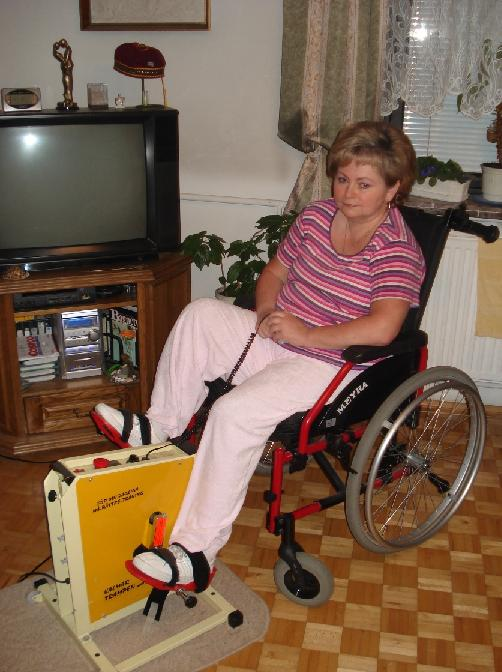

Strona Urszuli Sablik
|
 |
Witam wszystkich na mojej domowej stronie internetowej. Zachęcam do zapoznania się z informacjami na temat mojej osoby i problemów zdrowotnych, związanych z chorobą rdzenia kręgowego. Być może wiedza ta pomoże Tobie, Twoim najbliższym lub osobom, które nie wiedzą gdzie takiej pomocy szukać. Kontakt: 43-344 Bielsko-Biała Ul. Muzealna 5 Telefon: 0048 338175529 E-mail: urszulasablik (at) wp.pl |